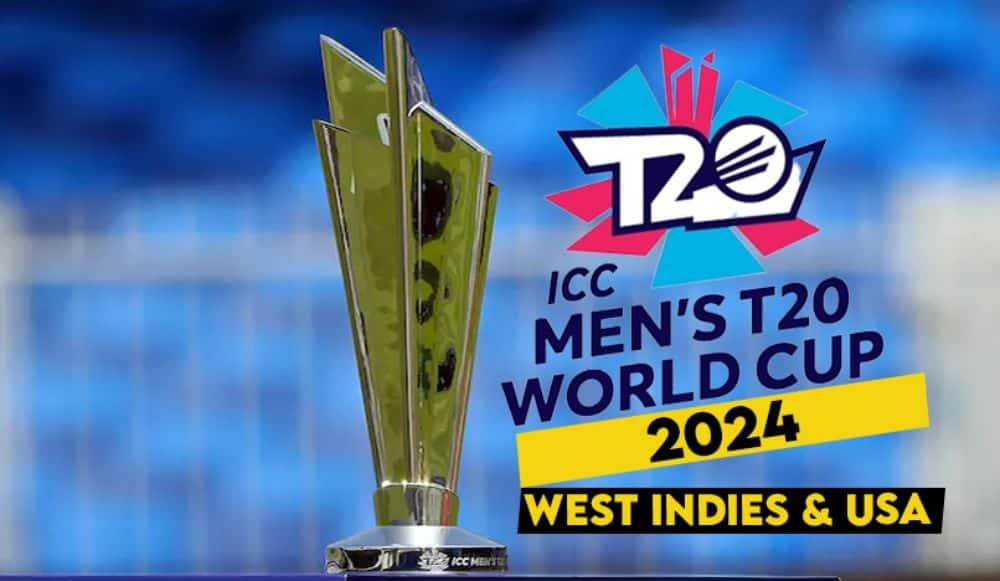
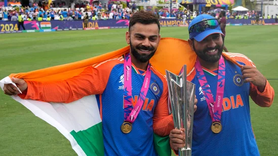

T20 World Cup 2024
This is where you'll find the latest news, updates, and commentary on the 2024 ICC Men's T20 World Cup.
2024 ICC MEN'S T20 WORLD CUP
The 2024 ICC Men's T20 World Cup was the ninth edition of the ICC Men's T20 World Cup. It was co-hosted by the West Indies and the United States from 1 to 29 June 2024; the tournament being hosted by the West Indies for the second time, while this was also the first major ICC tournament to feature matches played in the United States.
The tournament field expanded from 16 to 20 teams, including the two hosts, the top eight teams from the 2022 edition, the best placed two teams in the ICC Men's T20I Team Rankings not already qualified, and eight other teams determined by regional qualifiers.
England were the defending champions and were beaten in the semi-finals by India, who went on to win their second T20 World Cup title, defeating South Africa by 7 runs and equalling England and West Indies with the most titles in the T20 World Cup.
INDIAN LEGENDS RETIRE FROM T20 INTERNATIONALS
India captain Rohit Sharma announced that he was retiring from T20 international cricket after winning the World Cup in Saturday's final against South Africa. Rohit said he would continue for India in the Test and ODI formats but was stepping back from the shortest format. Rohit's announcement came shortly after his teammate Virat Kohli also announced his retirement from T20 cricket for India.
"No better time to say goodbye," Rohit said during the post-match press conference as he celebrated India's historic second T20 World Cup title. The decision marks a fitting end to Rohit's T20I career, as he began it with a World Cup win and concluded it with another. Between those 17 years, Rohit rose to unprecedented heights as a batter, finishing as India's highest run-scorer in T20Is with 4231 runs from 159 matches at an average of 32.05. His five centuries in the format is also the most by any Indian batter. He was made India's full-time T20I captain in November of 2021 and capped off a memorable career with a 50th win as skipper.